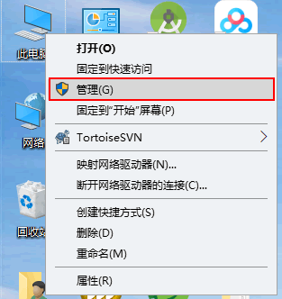
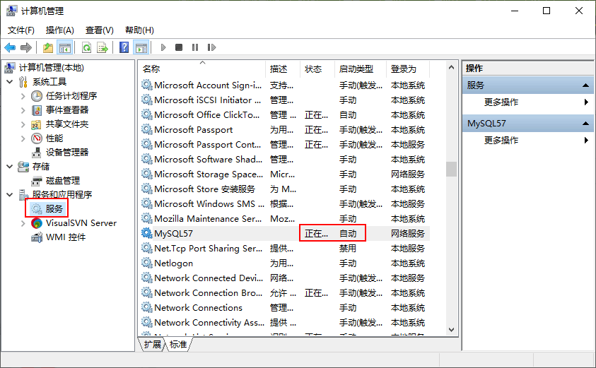
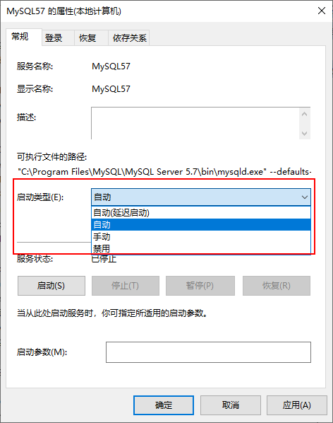
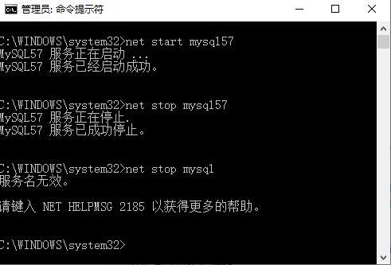

首页 > MySQL教程 > MySQL的安装和配置
启动MySQL服务的两种方式（图解）
MySQL 服务和 MySQL 数据库不同，MySQL 服务是一系列的后台进程，而 MySQL 数据库则是一系列的数据目录和数据文件。MySQL 数据库必须在 MySQL 服务启动之后才可以进行访问。本节主要介绍如何启动 MySQL 服务。
Windows 系统下启动停止 MySQL 服务的方式主要有以下两种：
步骤 1)：在桌面上右击“此电脑”→“管理”命令，如图所示。
步骤 2)：弹出“计算机管理”对话框，双击“服务和应用程序”，用户可查看计算机的服务状态，MySQL 的状态为“正在运行”，表明该服务已经启动，如图所示。
可以在此处鼠标右击选择属性进入“MySQL的属性”的界面，如图所示。
可以在 MySQL 的属性界面中设置服务状态。可以将服务状态设置为“启动”、“停止”、“暂停”和“恢复”命令。
还可以设置启动类型，在启动类型处的下拉菜单中可以选择“自动”、“手动”和“禁用”。这 3 种启动类型的说明如下:
注意：
Windows 系统下启动停止 MySQL 服务的方式主要有以下两种：
- 通过计算机管理方式
- 通过命令行方式
通过计算机管理方式
通过 Windows 的服务管理器查看修改，步骤如下：步骤 1)：在桌面上右击“此电脑”→“管理”命令，如图所示。

步骤 2)：弹出“计算机管理”对话框，双击“服务和应用程序”，用户可查看计算机的服务状态，MySQL 的状态为“正在运行”，表明该服务已经启动，如图所示。

在图中可以看到，服务已经启动，而且启动类型为自动。如果没有“正在运行”字样，说明 MySQL 服务未启动。可以在此处鼠标右击选择属性进入“MySQL的属性”的界面，如图所示。

可以在 MySQL 的属性界面中设置服务状态。可以将服务状态设置为“启动”、“停止”、“暂停”和“恢复”命令。
还可以设置启动类型，在启动类型处的下拉菜单中可以选择“自动”、“手动”和“禁用”。这 3 种启动类型的说明如下:
- 自动：MySQL 服务是自动启动，可以手动将状态变为停止、暂停和重新启动等。
- 手动：MySQL 服务需要手动启动，启动后可以改变服务状态，如停止、暂停等。
- 已禁用：MySQL 服务不能启动，也不能改变服务状态。
如果需要经常练习 MySQL 数据库的操作，可以将 MySQL 设置为自动启动，这样可以避免每次手动启动 MySQL 服务。当然，如果使用 MySQL 数据库的频率很低，可以考虑将 MySQL 服务设置为手动启动，这样可以避免 MySQL 服务长时间占用系统资源。
通过命令行方式
可以通过 DOS 命令启动 MySQL 服务，点击“开始”菜单，在搜索框中输入“cmd”，以管理员身份运行，按回车键，弹出命令提示符界面。然后输入net start mysql，按回车键，就能启动 MySQL 服务，停止 MySQL 服务的命令为net stop mysql，如图所示。

注意：
net start mysql57和net stop mysql57命令中的 mysql57 是 MySQL 服务器名称，如果你的 MySQL 服务名称是 DB 或其它的名字，应该输入net start DB或其它名称，否则提示服务名无效。关注公众号「站长严长生」，在手机上阅读所有教程，随时随地都能学习。内含一款搜索神器，免费下载全网书籍和视频。

微信扫码关注公众号